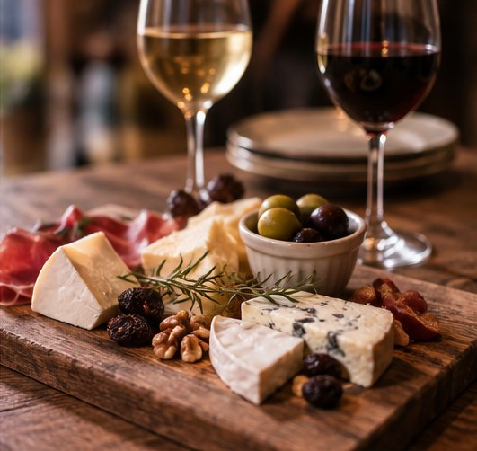
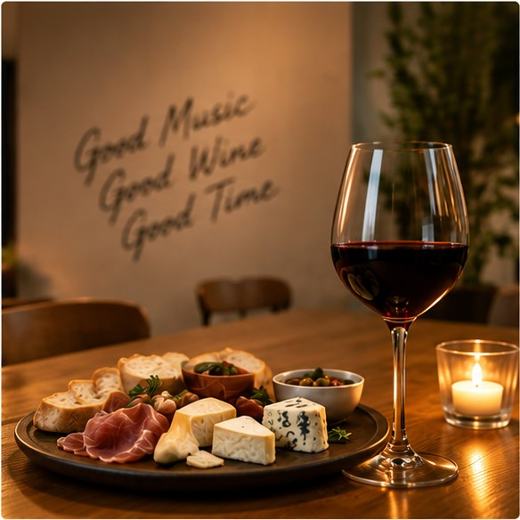
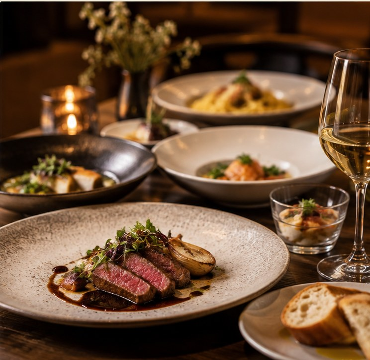

CHEESE & WINE BAL OST YARD
好きなものだけ、ゆるく集めました。
古着屋やレコード屋帰りに、ふらっと寄れる店を。チーズもワインも、知らなくて大丈夫。
FOR PEOPLE LIKE US
こんな感じ、なんとなく分かる人へ。
- チェーン店だと、ちょっと物足りない
- 古着屋やレコード屋の帰り、行き場がない
- 年齢やジャンルで浮くのが気になる
- チーズやワイン、詳しくないから気後れする
THE IN-BETWEEN PLACE
探し方の問題じゃなくて、
そもそも少ないだけ。
チェーン店は誰にでも合うようにできてる分、個性が薄い。専門店は詳しくないと入りにくい。その間にあるお店が、実はあんまりない。
WHY OST YARD
だから、OST YARDを作りました。

REASON 01
ジャンルも年齢も、気にしなくていい空気感
量産型のチェーン店でも、敷居の高い専門店でもありません。

REASON 02
チーズ×ワインを、堅苦しくなく
知識がなくても、好みを伝えてもらえれば選べます。

REASON 03
南1条の路地裏、隠れ家みたいな立地
札幌市中央区南1条8丁目界隈、路地裏にひっそり佇んでいます。

A SIMPLE MENU
チーズもワインも、知らなくていい。
迷ったら、好みを伝えていただければスタッフが選びます。むずかしく考えなくて大丈夫です。

FIND THE DOOR
雑居ビルの中で、ひっそりと。
市電「西8丁目」停留場から徒歩3分ほど。
- LOCATION
- 札幌市中央区南1条8丁目界隈
- HOURS
- 18:00〜24:00（月曜定休）
- VISIT
- 予約優先（当日のご来店も歓迎）
QUESTIONS, ANSWERED
よくある質問
チーズやワインに詳しくなくても大丈夫？
大丈夫です。好みを伝えていただければ、こちらで選びます。
一人でも入れますか？
一人のお客様も多くいらっしゃいます。
予約は必須ですか？
予約優先ですが、当日ふらっと来店いただいても大丈夫です。